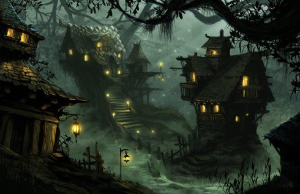
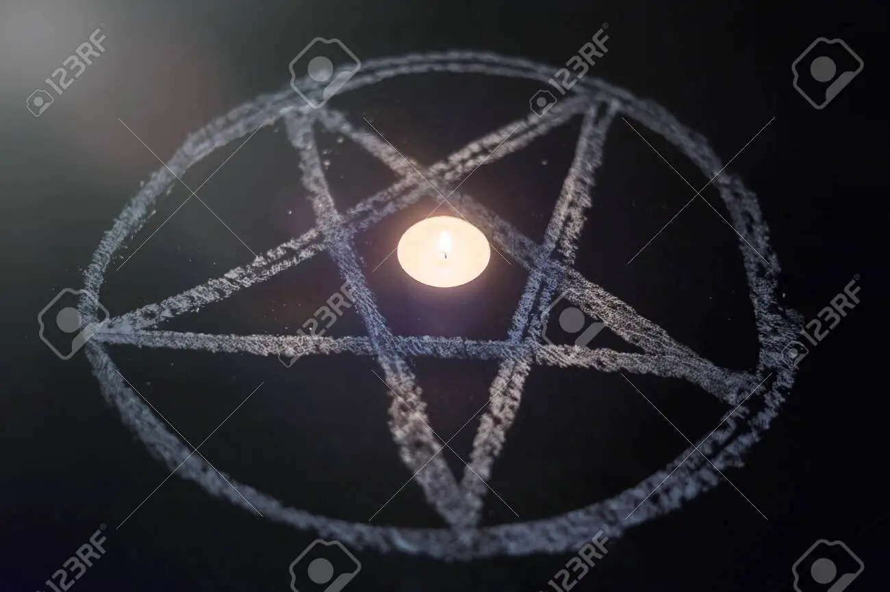

Anões são o resultado de uma deficiência genética que afeta a capacidade humana de crescer durante o periodo da adolescência chamado estirão.
Ou isso é o que querem que você pense.
Na verdade os anões são seres mágicos do mundo do oculto. Eles tendem a ser benevolentes, menos quando provocados.
Para invocar um anão, deve-se jogar cara ou coroa por 7 vezes e perder todas vezes. Após isso, bata sua cabeça contra um espelho a meia noite. Um anão baterá em sua porta.
Espero que goste.
 